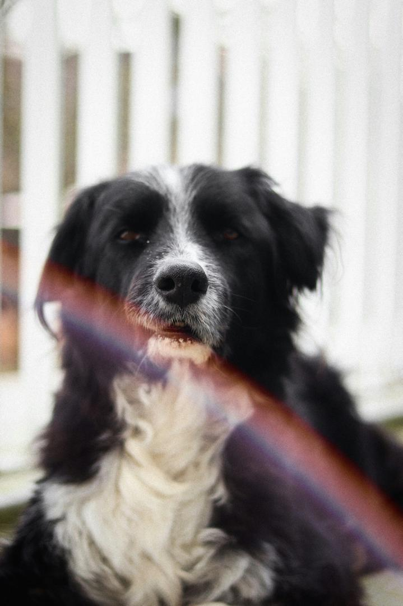
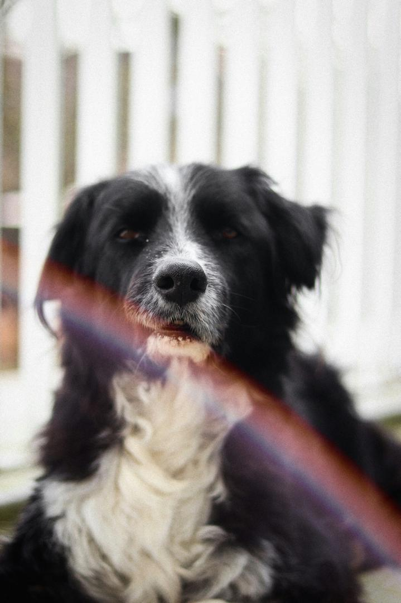
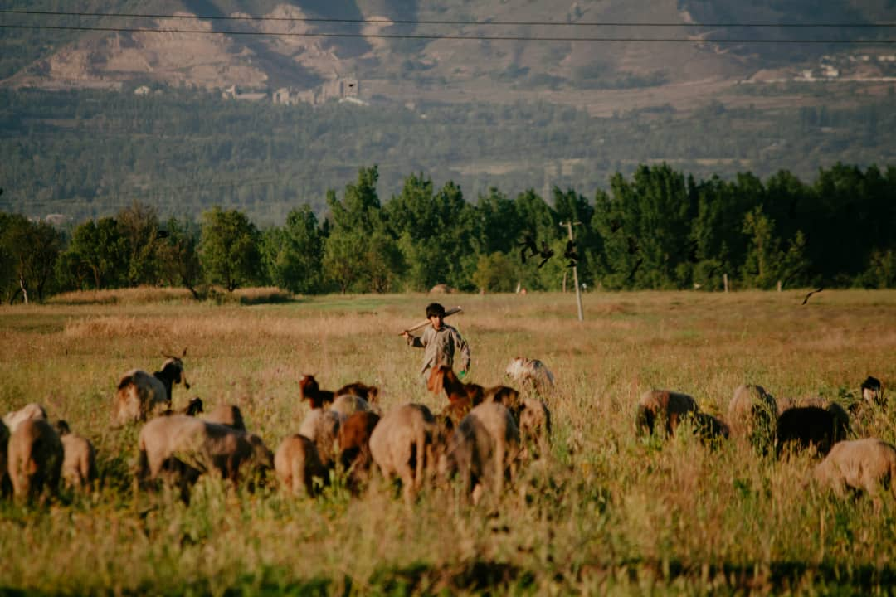
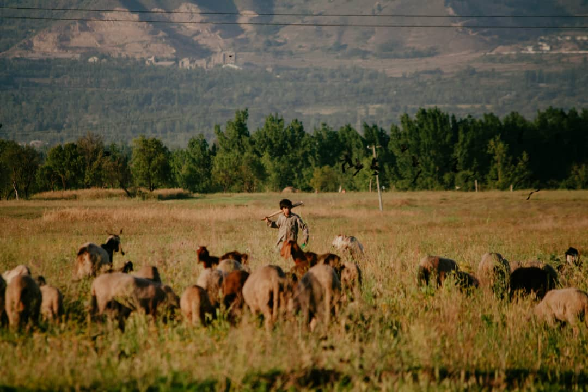
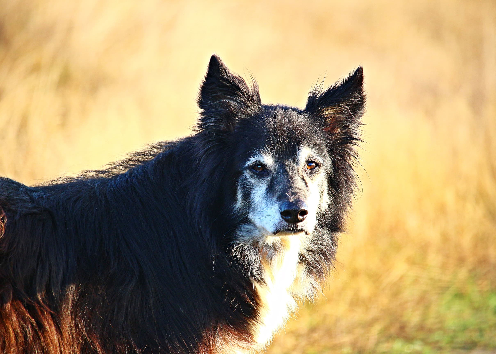
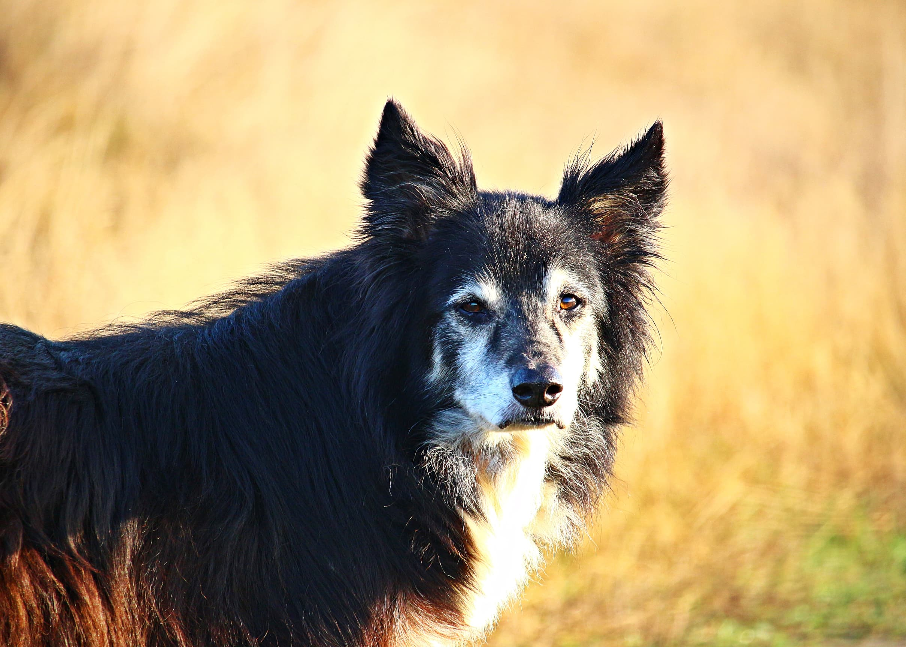

The Sport — Growth, Tradition & Youth Engagement
The sport celebrates a deep partnership between dog and handler. To keep that tradition alive we highlight accessible entry points, visible youth achievement and digital communities that share learning and inspire newcomers.
History & Tradition
The sport grew from shepherding and practical tests of skill into organised trials and championships. The hallmark of every era is partnership: a handler's timing and a dog's initiative working together on the land.
Youth Engagement — Pathways That Work
- Accessible entry points: training days and rental fields lower barriers for those who do not own land.
- Visible youth achievement: publicised youth success provides role models and motivation.
- Digital community: online coaching, short clips and mentorship create global learning networks.
Programs that celebrate young handlers and make learning visible help the sport attract new people while keeping core practice intact.
Practical Skills & Course Awareness
Learners should study timing, line choices, and the feel of pressure and release. Watching runs (via linked videos on creators' channels) helps new handlers understand courses and decision-making.

Here you will learn more about the courses on trialing dogs. Follow this link to learn more.
Image Gallery

 

 



 



Events, Clubs & Community
Local clubs and ISDS calendars list trial dates and training opportunities. Volunteering at events helps learners meet trainers and understand event roles.